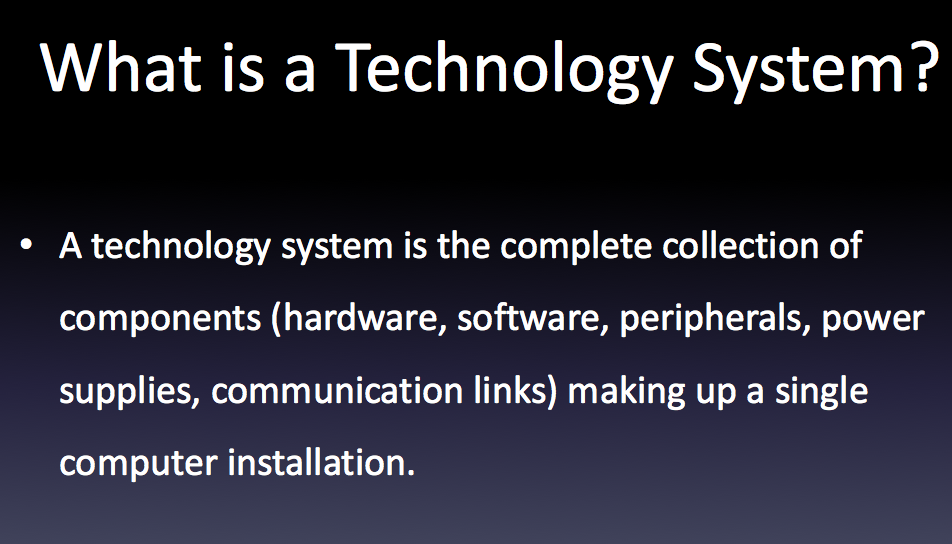
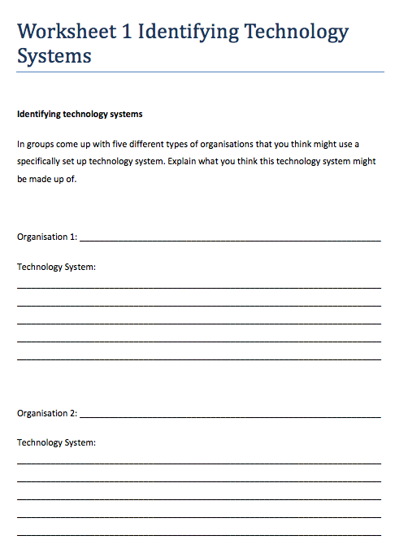
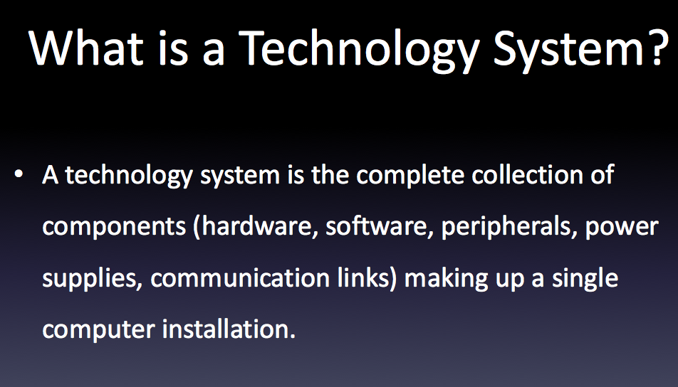
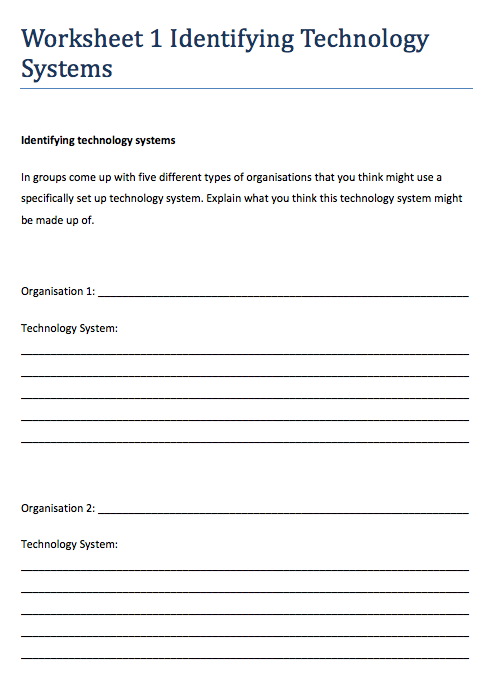

We learn about technology systems. That was the first thing we did on this unit 2 . After that we did a couple practice of binary because some people didn't understand it. Binary was very hard for me but at the end I got to know how to multiply and add binary number. Later we had to do practice exam just to give ideas about the unit. The practice exam was really easy because I learnt before doing it.